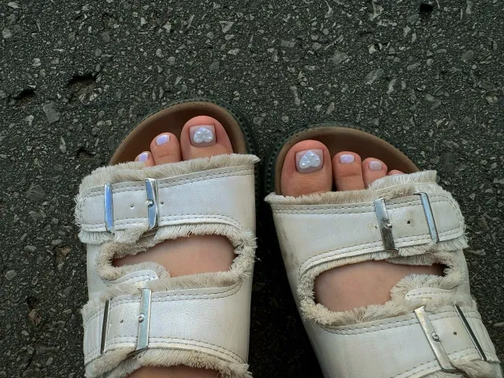
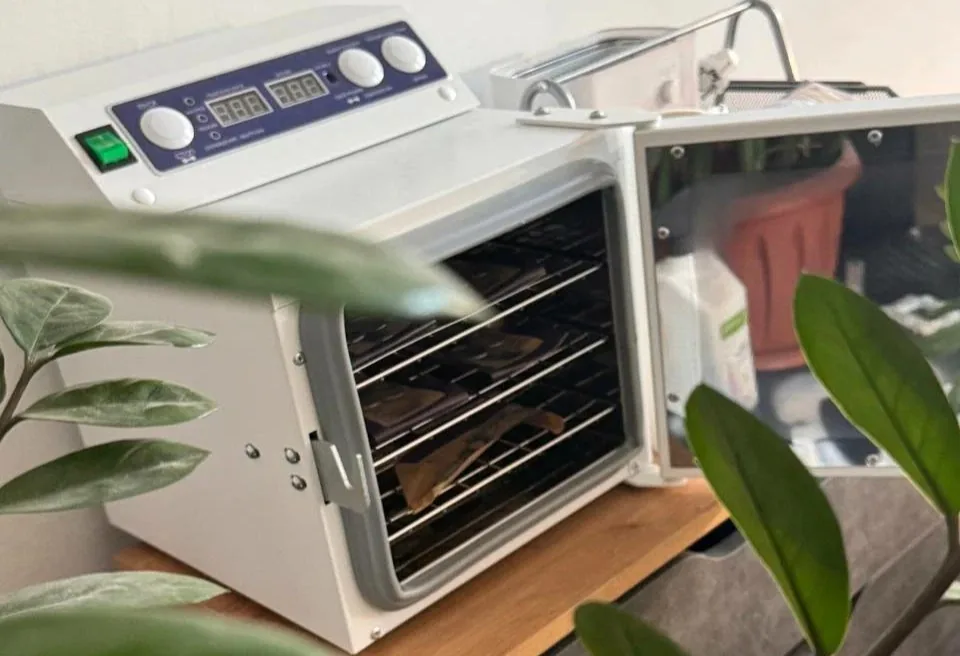

Пальчики
Обработка ногтей и пальчиков без покрытия.
900 ₽
Студия в центре Самары
Аккуратная обработка пальчиков и стоп, покрытие гель-лаком или педикюр без покрытия. Подберём подходящий вариант по состоянию ногтей и вашим пожеланиям.

Обработка ногтей и пальчиков без покрытия.
900 ₽
Обработка пальчиков и покрытие гель-лаком.
1700 ₽
Стоимость зависит от объёма обработки.
600–1000 ₽
Педикюр без последующего покрытия.
1300 ₽
Комплексная обработка без покрытия.
900 ₽
Обработка стоп и покрытие ногтей.
2100 ₽
Точная услуга выбирается при записи. Если сомневаетесь, напишите мастеру — поможем подобрать вариант без лишних процедур.

После каждого клиента инструменты проходят дезинфекцию, предстерилизационную очистку и сухожаровую обработку. Запечатанный крафт-пакет открывается перед процедурой.
Обработка пальчиков стоит 900 ₽, педикюр с покрытием — 1700 ₽, обработка стоп — от 600 до 1000 ₽.
Да, в прайсе есть несколько вариантов обработки без гель-лака.
Самара, улица Куйбышева, 78 — в центре города.
Выберите услугу, мастера и удобное свободное время онлайн.
Записаться